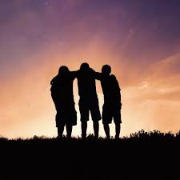
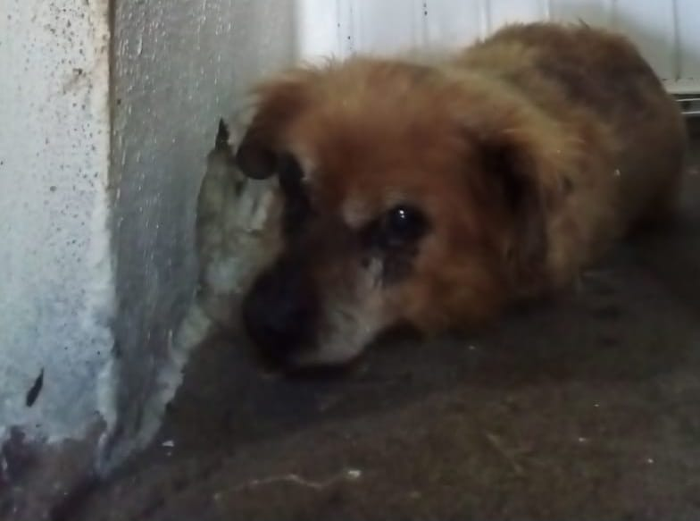
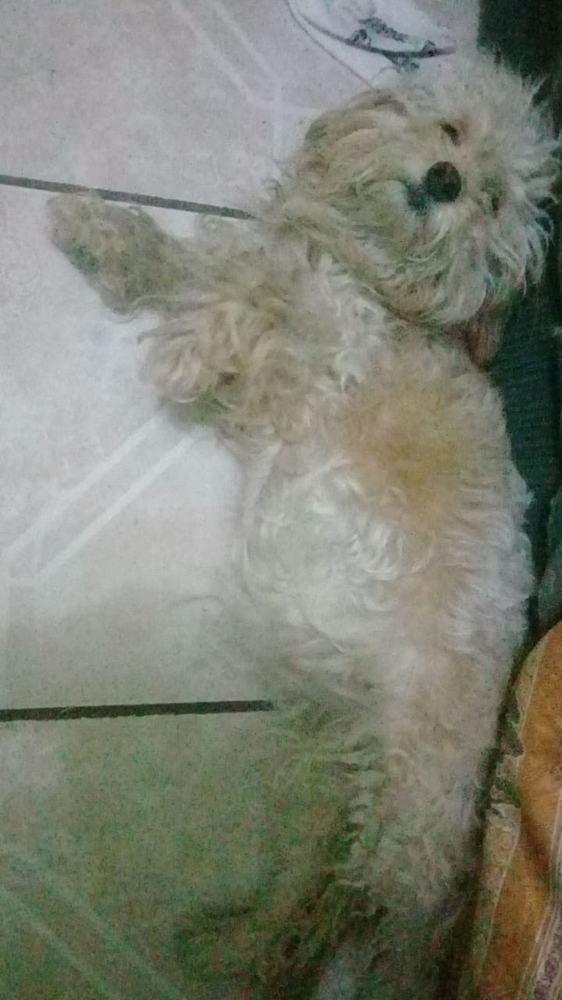

Life, Loss, and What We Learn
Life has a way of hitting you in places you didn’t even know could hurt. Sometimes, it’s not about what you could’ve done differently but about the things you witnessed and can never unsee. There are moments that leave a scar so deep, it feels like it will never heal. For me, those moments are tied to the people and the souls I’ve lost—friends and pets that meant the world to me.
I had three friends, three amazing people who, for reasons I’ll never fully understand, decided to end their lives. And the worst part? I was there, watching it all unfold over a video call...
As if that wasn’t enough, I lost two of my best companions not long after. My dogs, Canelo and Canela...
 The thing about grief is that it doesn’t follow a schedule. It hits you at random moments—in the middle of a song, in the way the sunlight falls on an empty chair, or in the silence that follows laughter. There’s no preparation for it, no way to fast-forward through the pain. But over time, you start to notice the small signs of healing. For me, it was realizing that I could look at photos of Canelo and Canela without breaking down, or remembering the good times with my friends instead of just the pain of losing them.
One of the hardest lessons I’ve had to learn is that grief isn’t something you get over—it’s something you carry with you. And in carrying it, you find a new way to live. You start to see the beauty in small things: a kind word from a stranger, the way the wind rustles through the trees, or the warmth of a hug when you need it most. These moments don’t erase the pain, but they remind you that life still holds meaning, even in the face of loss.
.jpg)
Writing about my experiences has been one of the ways I’ve started to process my grief. There’s something about putting your thoughts into words that makes the weight of them just a little easier to bear. If you’re reading this and you’ve experienced loss, I hope you know that it’s okay to feel broken. It’s okay to cry, to scream, to feel like the world is falling apart. But I also hope you know that healing is possible. It’s not about forgetting—it’s about finding a way to remember without being consumed by the pain.
In the end, loss is a part of the human experience. It’s something we all go through, in one form or another. And while it’s easy to focus on the pain, I believe there’s also something to be gained from it. Loss teaches us to cherish the people and moments that matter, to let go of the trivial things, and to find strength in the love that remains. Because even when someone is gone, their impact on your life doesn’t disappear. It becomes a part of you, shaping the person you are and the way you move forward.
Have you ever felt this kind of loss? How do you move forward when the past keeps pulling you back? Share your story—you might be surprised at how much it helps.